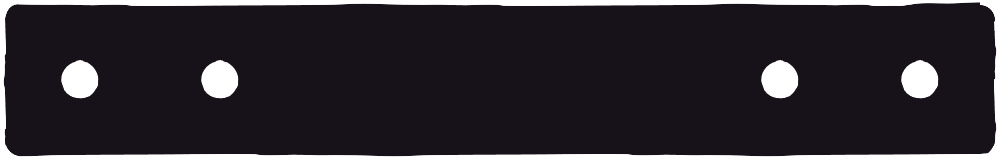

games
BeetleMania was my game design master’s project at IULM University in 2021. It’s a game about observation rather than direct participation. Within the context of beetle wrestling, players are expected to make bets based on the results of past matches—for example, they may have noticed that the beetle with the purple gem is able to clone itself, which is particularly advantageous given the current matchup; or that in this arena smaller beetles are disadvantaged because of the pits that they can fall into. The pitch was Robot Wars (BattleBots if you’re American) x Gang Beasts x Pokemon. As it stands it’s more of a technical showcase than a functional game, being my first foray into 3D, AI, and the first time I’ve worked substantially with an artist. I hope to someday elaborate on the concept.
You can play a slightly butchered version of the game in your web browser here (the replay system doesn’t work in this build).
A fully working Windows build is available here, and here for macOS.
Credits
- Design, production, programming, art direction — me
- Modelling, animation — Dan M
- UI art — Timothy Tsang
- Music composition — jaxcheese
Part infinite runner, part music video, Swing Shot is a one-button arcade game with a minimalist aesthetic. The aesthetic was the main driving force behind the design, informing the visuals, music, and gameplay. During production elements were added, then taken away. What’s left is a game about performing a single action well, with dwindling room for error the further you go.
Play the WebGL build here.
Credits
- Design, programming, art — me
- Music composition — jaxcheese
Although not my first Unity project, Doubles was by far my most polished and complete game to date in 2017/2018. It’s Pong, but with two paddles per player and a radial playfield. These additions make for a more strategic game, with room for ‘backhands’ (where the inner paddle deflects the ball) and ‘slices’. More advanced moves include ‘smashes’ and ‘breaks’, which splits the ball into two! The original implementation was bogged down by finicky controls, but I plan to rectify that in a future release.
You can download the original version here.
Credits
- Design, programming, art — me
- Music composition — jaxcheese